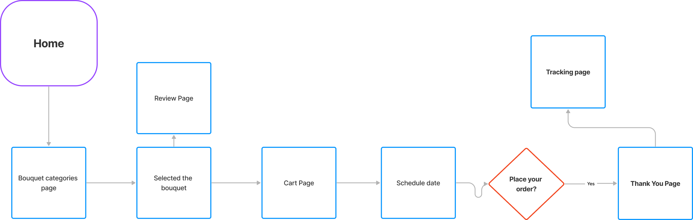

YEAR 2023
OVERVIEW
Fiori is an e-commerce mobile app designed for people interested in flowers as a gift or decoration. The app will help the user to find the most suitable flowers and get them delivered.

Fiori is an e-commerce mobile app designed for people interested in flowers as a gift or decoration. The app will help the user to find the most suitable flowers and get them delivered.
UX/UI Designer
User research, interviews, survey, competitive analysis, ideation, prototyping, testing, evaluation
Figma, Google jamboard
Many people want to buy quality flowers but don’t have much time to go to the florist. Also, some of them don’t know which flower is the best option for the occasion. Flower selection can be overwhelming and lead to poor choices that end up in a wasted budget.
Fiori provides an intuitive user interface that allows customers to browse for different flowers in a very informed and customizable way. The search bar as well as different categories allow users to quickly find what they are looking for in a time efficient manner. The intuitive design as well as the friendly colos scheme keeps users engaged and happy. Effectiveness is measured by analyzing the number of orders and sign-ups completed through the app as well as user feedback through the app store.
In my design process I decided to use Design thinking, a user-centered approach to problem-solving that includes research, prototyping and testing which helps me understand who my user is, what their problems are, and what design should I include. The design considers their stories, emotions and insights which I have gathered about them thorughout my design process.

Design
In order to understand the needs and goals of my target users, I conducted user research using a combination of methods, including surveys, interviews, emphaty maps, personas and user journey map.
User interviews help uncover the user's needs, goals and frustations, revealing their pain points.
I interviewed 5 individuals, age 18 - 55, who have a busy life schedule and have ordered online flowers.
If the search function is not effective or intuitive, users may have problems in finding specific flowers. This could lead to a poor user experience.
"I want to see a bigger image of the flower" If the app does not have visually good images or design elements, users may not be motivated to browse the catalogue or make purchases. This could lead to low engagement and sales
"Having an option to schedule the delivery date would be nice"
Too many options of flowers can make the user overwhelmed and confused, separation by categories can help.
Based on research findings, I created a persona who represents the target user of the flower app and their needs and habits. This helped me to empathize with the end user on the remaining steps of the design process.


After gathering the findings from the research, I define the problem statement.
Problem Statment: Alena Bartor is a full time student who needs to choose the right bouquet to send as a gift for the right occasion, because she has a busy schedule and no time to go to a flower store.
I created a user journey, to see how my user feels.
Persona: Alena Bartor
Scenario: Order online flowers
Expectations:
I created a user flow diagram for the payment process, that is one of the most important functionality. The task flow assumes a visit by a guest who has not signed up yet.
Creating the paper wireframe allowed me to synthesize initial information gathered from prospective users

After defining the main user flow, I attempted to create the first set of lo-fi wireframes to run some preliminary testing with the actual users. That allowed me to gather some initial feedback and save time later in the process before I started the high-fidelity prototype.
The version below includes
My goal was to keep the elements I was designing cohesive with the developed branding. I created a simple set of icons, buttons and a color palette using the colors of the logo. I wanted this app to represent a nice mixture of simplicity, efficiency and pleasant visuals where the user achieves their statet flower buying goal without any of the drwabacks of doing mundane tasks.

The feedback from the usability test, helped guide the design from low-fidelity wireframes to the mockups and high-fidelity prototypes.
User testing revealed a list of priority revisions that I implemented to the high-fidelity prototype that included:
For Home screen, I added some slides hero image to get the user attention for the rewards and discounts. I also moved the search bar to the top of the screen, I used tabs to group content into helpful categories and added you might also like section.


I added a review page, which helps the users to make a decision faster based on reviews.
During the interviews I noticed that users like to check the update of their purchase, that helps people reduce their anxiety. I also added a CTA to encourage the user to navigate through other bouquet options.


The app has been described by usability study participants as easy to use, easy to navigate and intuitive.
Trust the design process to let go of biases: I designed the flower app as a part of google UX design certification. I was confident that my app included all the necessary feature set, from the very beginning. The interviews, surveys, competitive analysis proved me wrong early in the process. Research is insightful and one of the things I would like to learn more about.
My knowlodge of software engineering helped me with my design strategy, as I understand some technical limitations.